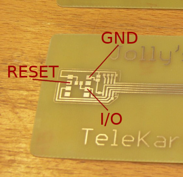

|

|  |
Connect Ground to GND.
|
To run the emulator, use the "sim" keyword at the end of the command line. Use the '-s' option to give the correct serial interface:
# src/sim/cnetz_sim -s /dev/ttyUSB0 sim ... FUTLN=23100001, Sicherungscode=3103, Kartekennung=3, Sonderheitenschluessel=0, Wartungsschluessel=65535 Telephone directory has 80 entries. SIM emulator ready, please start the phone! sim.c:1352 info : Reset signal on (low) sim.c:1352 info : Reset signal off (high) sim.c:1371 info : Card has disabled PIN (system PIN '0000') Selecting card #1. sim.c:1374 info : Sending ATR sim.c:1125 info : RX message sim.c:1135 info : control I: N(S)=0 N(R)=0 sim.c: 473 info : SL-APPL app 3 sim.c:1222 info : TX response sim.c:1228 info : control I: N(S)=0 N(R)=1 sim.c:1125 info : RX message sim.c:1135 info : control I: N(S)=1 N(R)=1 sim.c: 558 info : RD-EBDT sim.c:1222 info : TX response sim.c:1228 info : control I: N(S)=1 N(R)=2 sim.c:1125 info : RX message sim.c:1135 info : control I: N(S)=2 N(R)=2 sim.c: 473 info : SL-APPL app 4 sim.c:1222 info : TX response sim.c:1228 info : control I: N(S)=2 N(R)=3 sim.c:1125 info : RX message sim.c:1135 info : control I: N(S)=3 N(R)=3 sim.c: 473 info : SL-APPL app 3 sim.c:1222 info : TX response sim.c:1228 info : control I: N(S)=3 N(R)=4 sim.c:1125 info : RX message sim.c:1135 info : control I: N(S)=4 N(R)=4 sim.c: 558 info : RD-EBDT sim.c:1222 info : TX response sim.c:1228 info : control I: N(S)=4 N(R)=5 sim.c:1125 info : RX message sim.c:1135 info : control I: N(S)=5 N(R)=5 sim.c: 599 info : RD-RUFN (loc=0) sim.c: 655 info : 80 numbers can be stored in EEPROM sim.c:1222 info : TX response sim.c:1228 info : control I: N(S)=5 N(R)=6 sim.c:1352 info : Reset signal on (low)
Use '-h' command line option to get a list of all options.
To run the sniffer, use the "sniff" keyword at the end of the command line. You only need to connect I/O line to the RX line of your serial interface. (And ground of course!) Use the '-s' option to give the correct serial interface:
# src/sim/cnetz_sim -s /dev/ttyUSB0 sniff sniffer.c: 602 info : ---------------------------------------- sniffer.c: 609 info : Reading ATR normal bit order: sniffer.c: 547 info : TD1 T=14: Refers to transmission protocols not standardized by ISO/IEC JTC 1/SC 17. sniffer.c: 590 info : ---------------------------------------- sniffer.c: 547 info : TD2 T=14: Refers to transmission protocols not standardized by ISO/IEC JTC 1/SC 17. sniffer.c: 590 info : ---------------------------------------- sniffer.c: 418 info : TA3 fsmin = 3 MHz sniffer.c: 433 info : TA3 fsmax = 5 MHz (Default) sniffer.c: 470 info : TB3 Maximum block size = 42 sniffer.c: 516 info : TC3 Character Waiting Time = 3 sniffer.c: 547 info : TD3 T=14: Refers to transmission protocols not standardized by ISO/IEC JTC 1/SC 17. sniffer.c: 590 info : ---------------------------------------- sniffer.c: 440 info : TA4 Block Waiting Time = 4 sniffer.c: 590 info : ---------------------------------------- sniffer.c: 595 info : History byte #1: 0x92 sniffer.c: 595 info : History byte #2: 0x80 sniffer.c: 595 info : History byte #3: 0x00 sniffer.c: 595 info : History byte #4: 0x41 sniffer.c: 595 info : History byte #5: 0x32 sniffer.c: 595 info : History byte #6: 0x36 sniffer.c: 595 info : History byte #7: 0x01 sniffer.c: 595 info : History byte #8: 0x11 sniffer.c: 690 info : Checksum 0xe4 ok. sniffer.c: 697 info : ATR done! sniffer.c: 715 info : ---------------------------------------- sniffer.c: 734 info : Layer 2: sniffer.c: 735 info : source 3 -> to 1 sniffer.c: 737 info : control I: N(S)=0 N(R)=0 sniffer.c: 744 info : length 15 sniffer.c: 203 info : Interface control layer ICB1: sniffer.c: 207 info : ON-LINE-BIT: 0 = Off-line data sniffer.c: 211 info : CONFIRM-BIT: 0 = No meaning sniffer.c: 213 info : MASTER/SLAVE-BIT: 1 = Sender is master sniffer.c: 219 info : WT-EXTENSION-BIT: 0 = No request for WT-Extension sniffer.c: 223 info : ABORT/TERMINATE-BIT: 0 = No meaning sniffer.c: 227 info : ERROR-BIT: 0 = No meaning sniffer.c: 231 info : CHAINING-BIT: 0 = No more ICL data follows sniffer.c: 235 info : ICB-EXTENSION-BIT: 0 = no ICB follows sniffer.c: 48 info : Layer 7: sniffer.c: 50 info : I = Command sniffer.c: 51 info : CLA = 0x02 sniffer.c: 54 info : -> CNTR (Control Class) sniffer.c: 75 info : INS = 0xf1 sniffer.c: 80 info : -> SL-APPL (Select Application) sniffer.c: 180 info : DLNG = 11 sniffer.c: 187 info : DATA(0) = 0x38 '8' 56 sniffer.c: 187 info : DATA(1) = 0x39 '9' 57 sniffer.c: 187 info : DATA(2) = 0x34 '4' 52 sniffer.c: 187 info : DATA(3) = 0x39 '9' 57 sniffer.c: 187 info : DATA(4) = 0x30 '0' 48 sniffer.c: 187 info : DATA(5) = 0x31 '1' 49 sniffer.c: 187 info : DATA(6) = 0x30 '0' 48 sniffer.c: 187 info : DATA(7) = 0x30 '0' 48 sniffer.c: 187 info : DATA(8) = 0x33 '3' 51 sniffer.c: 187 info : DATA(9) = 0x30 '0' 48 sniffer.c: 187 info : DATA(10) = 0x31 '1' 49 sniffer.c: 715 info : ---------------------------------------- sniffer.c: 734 info : Layer 2: sniffer.c: 735 info : source 1 -> to 3 sniffer.c: 737 info : control I: N(S)=0 N(R)=1 sniffer.c: 744 info : length 4 sniffer.c: 203 info : Interface control layer ICB1: sniffer.c: 207 info : ON-LINE-BIT: 0 = Off-line data sniffer.c: 211 info : CONFIRM-BIT: 0 = No meaning sniffer.c: 215 info : MASTER/SLAVE-BIT: 0 = Sender is slave sniffer.c: 219 info : WT-EXTENSION-BIT: 0 = No request for WT-Extension sniffer.c: 223 info : ABORT/TERMINATE-BIT: 0 = No meaning sniffer.c: 227 info : ERROR-BIT: 0 = No meaning sniffer.c: 231 info : CHAINING-BIT: 0 = No more ICL data follows sniffer.c: 235 info : ICB-EXTENSION-BIT: 0 = no ICB follows sniffer.c: 48 info : Layer 7: sniffer.c: 142 info : I = Response sniffer.c: 143 info : CCRC = 0x05 sniffer.c: 145 info : -> PIN-NOT-OK sniffer.c: 149 info : -> APRC valid sniffer.c: 158 info : APRC = 0x02 sniffer.c: 160 info : -> Bit 2 = 1:PIN-Check required sniffer.c: 166 info : -> Bit 3 = 0:Application unlocked sniffer.c: 170 info : -> Bit 5 = 0:GEBZ/RUFN unlocked sniffer.c: 174 info : -> Bit 6 = 0:GEBZ not full sniffer.c: 180 info : DLNG = 0 sniffer.c: 302 info : Resetting sniffer
When the phone is switched on, the SIM card is powered up and outputs the ATR sequence (Answer To Reset).
The first message is a command message that is transmitted from the phone towards the SIM card. The layer 2 header indicates the direction and the length of 15 bytes. The ICR layer has no meaning with the C-Netz. Except for the MASTER/SLAVE-BIT, no other bit is used. The layer 7 (application) header indicates the command and the message type and length, followed by 11 bytes of data. This command tells the SIM card to select C-Netz application.
The second message is a response message that is transmitted from the SIM card towards the phone. The layer 2 header indicates the direction and the length of 4 bytes. The layer 7 header indicates the response and status bits and length, followed by 0 bytes of data. The response tells the SIM card that a PIN is required to complete the command. The user is prompted to enter the pin.
To read more about the protocol, and the meaning of messages, refer to FTZ 171 TR 60 - Anhang 1 Berechtigungskarte als Prozessorkarte.pdf
You find the PCB drawings inside the "layout" directory of the git repository. Be sure to print it without scaling! Check if the printed size matches an ISO card. Also there are the source files for the 'Eagle' and 'KiCad' layout programs.
You may use an "Arduino UNO" or "ATTINY85" to emulate a SIM card without a PC. In case of the Arduino, you still need wires to connect it to the card reader of the phone. If you use an ATTINY85, you can put the micro controller directly on a PCB card, as shown on top of this page.
To compile and run with Arduino, you need to open "src/sim/sim.ino" with Arduino software and select the "Arduino UNO" board. The RESET input is at pin 6 and the I/O line at pin 7. Connect these two lines together with ground line to the card reader or ISO card PCB. You don't need a diode this time, since pin 7 is automatically switched between input and output. The serial protocol is emulated in software. The status LED (pin 13) will flash whenever a message is received from the card reader.
To compile and run with ATTINY85, you need to open "src/sim/sim.ino" with Arduino software and select the "ATiny25/45/85" board and the "ATiny85" chip. Refer to the internet on how to compile and flash the ATTINY85 without boot-loader. It is beyond the scope of this documentation. This time you need 5 wires to connect (VCC and Clock also).
Important: After flashing you need to wait 10 seconds before removing power. During that time the EEPROM is initialized. If you would read out the EEPROM, you will notice the letter 'C' at address 0. Then you would know that the init process was finished with success.
If you use the DIP version of the ATTINY85, you cannot put it on the card itself. The PCB in the picture on top of this page shows the DIP socket next to the actual card area. Be sure to put the chip on the back side of the SIM card. This works only if the phone does not completely enclose the card.
If you use the SOIC version of the ATTINY85, you need to make it flat, so it fits into your phone. You may use the full size SIM or just the mini SIM. I prefer the mini SIM and use an adapter card for larger phones.
The original ATTINY85 (1) is shown upside down. Bend the legs straight and shorten them, so they still fit into a programmer's socket. (2) Use P400 sand paper to sand off the bottom of the chip's case, until you reach the copper plate. (3) Make a hole into the PBC and solder the chip upside down into that hole. Pin 1 is marked on the PCB.
Important: You need to change clock source to pin 1.
Change lower fuse of 0xc0.
Note that you will not be able to do any further programming unless you apply clock signal to pin 1.
Use a crystal oscillator connected to pin 1 when you like to update the firmware in the future.
You may also use other type of clock signal.
Try something between 1 and 8 MHz.
I recommend to use the USBasp or a clone of that. It is cheap and easy and works with USB.
To set the fuses using "avrdude" in conjunction with "usbasp" flash tool, use:
avrdude -c usbasp-clone -p t85 -U lfuse:w:0xc0:m -U hfuse:w:0xdf:m -U efuse:w:0xff:m
If you run it again, you might notice that there is no response without a clock applied.
Apply a clock to pin 1 and see if you get a response again.
After powering up the phone with SIM adapter/emulator attached, the phone should show the default subscriber number (FUTLN) on the display. (Not all phones do. Read the manual to get the key code on how to show the subscriber number.) There is no PIN enabled by default, so the SIM card is ready after inserting or poweing up the phone. Now you can make calls, add telephone numbers or change PIN.
The SIM card can emulate 8 different cards. They share the same telephone directory, but have different subscriber data. Subscriber data can be changed to anything you like. This way it is possible to even emulate service cards ("Wartungskarten"), to put phones into service mode or special cell monitor mode.
If the PIN is disabled (default), the first card with first subscriber data is emulates. To select different card with dfferent subscriber data, change the PIN to 0001 .. 0008. Refer to the phone's manual on how to enable, disable or change the PIN. E.g. if you store the PIN 0000 or 0001, the first card with the first subscriber data is emulated. E.g. if you store the PIN 0005, the fifth card with the fifth subscriber data is emulated. In all cases, there is no PIN required when you turn on the phone.
| PIN | FUTLN = Subscriber | Sicherungs- code | Karten- kennung | Sonderheiten- schlüssel | Wartungs- schlüssel |
|---|---|---|---|---|---|
| 0000 or 0001 | 2222001 | 3103 | 3 | 0 | 65535 |
| 0002 | 2222002 | 3103 | 3 | 0 | 65535 |
| 0003 | 2222003 | 3103 | 3 | 0 | 65535 |
| 0004 | 2222004 | 3103 | 3 | 0 | 65535 |
| 0005 | 2222005 | 3103 | 3 | 0 | 65535 |
| 0006 | 2222006 | 3103 | 3 | 0 | 65535 |
| 0007 | 2222007 | 3103 | 3 | 0 | 65535 |
| 0008 | 2222008 | 3103 | 3 | 0 | 65535 |
You may want to use a PIN to select the card whenever you turn on the phone. Use the phone to enable a PIN that does not start with "000", "888", "999". When you restart your phone, you may enter that PIN, to select the first card. Alternatively you may enter the PIN 0000 or 0001, to select the first card, no matter what the PIN was. Or you may enter the PIN 0002 .. 0008, to select second to eighth card.
You may also alter each of the 8 different subscriber data store on the SIM.
In order to do that, you need to set a PIN, so the phone will ask for a PIN whenever it is turned on.
Choose any PIN you like, but not a PIN that startw with "000", "888", "999".
Reset the phone and you will be asked for a PIN.
Altering subscriber data via phonebook funcion:
Enter the PIN 9991 to alter the first subscriber data.
Enter the PIN 9992 .. 9998 to alter second to eighth subscriber data.
The subscriber data is shown in the telephone directory and can be altered by changing the numbers in that directory.
Also the SIM software version is shown on entry 06 of the telephone directory, but it cannot be changed.
The Bosch OF 7 does not like to store numbers less than 3 digits. Put zeroes in front, if you want to store a value less than 1000.
Altering subscriber data via PIN input:
Enter the PIN 8881 to alter the first subscriber data.
Enter the PIN 8882 .. 8888 to alter second to eighth subscriber data.
After that the phone displays that the PIN was wrong and prompts for another PIN.
With this trick the PIN prompt is used to input the subscriber data.
Now enter all 5 values of subscriber data, value by value.
Whenever you entered one value, the phone display that the PIN was wrong and prompts for the next value.
If the value is less than 4 digits, add zeros in front of it to make it at least 4 digits long.
After all 5 values have been entered, the SIM starts emulating that subscriber data.
If one of the input values is out of range, the SIM card will emulate a fictitious number "3333333".
This is displayed on the phone. This means that the input was wrong. Check the values and start over again.
Example for PIN input:
Miniporty monitor mode: 8881, 2222002, 0001, 0001, 0900, 1728
The default subscriber data and SIM version and where to change them in the telephone directory:
| Entry | Name | Number |
|---|---|---|
| 01 | FUTLN | 2222001 * |
| 02 | Sicherungscode | 3103 |
| 03 | Kartenkennung | 3 |
| 04 | Sonderheitsschl. | 0 |
| 05 | Wartungsschl. | 65535 |
| 06 | SIM software version | xxx ** |
(*) When PIN 9991 was entered.
(**) This value represents the software version and cannot be changed.
To program one of the following service cards, change the subscriber data to the indicated values.
| Type | FUTLN = Subscriber | Sicherungs- code | Karten- kennung | Sonderheiten- schlüssel | Wartungs- schlüssel |
|---|---|---|---|---|---|
| Siemens C5 service mode | - | - | - | 900 | 1000 |
| Philips Miniporty service mode | - | - | - | 900 | 1000 |
| Philips Miniporty restricted cell monitor | - | - | - | 900 | 1728 |
| Philips Miniporty extended cell monitor | - | - | - | 900 | 2729 |
| Philips Porty service mode | 0 | 0 | 0 | 2304 | - |
| Philips Porty cell monitor | - | - | - | 898 | - |
| AEG Telecar C service mode | - | - | - | 144 or 911 | - |
| AEG Telecar C cell monitor | - | - | - | 899 | - |